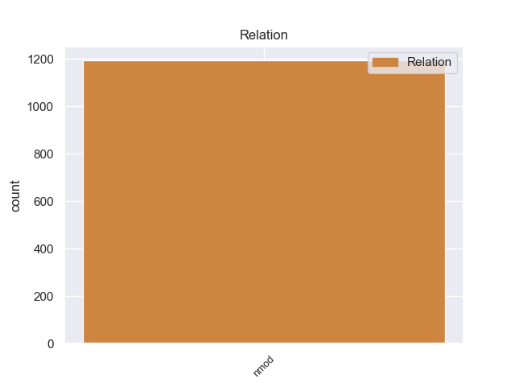
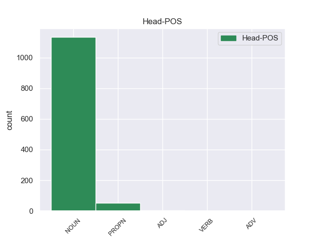
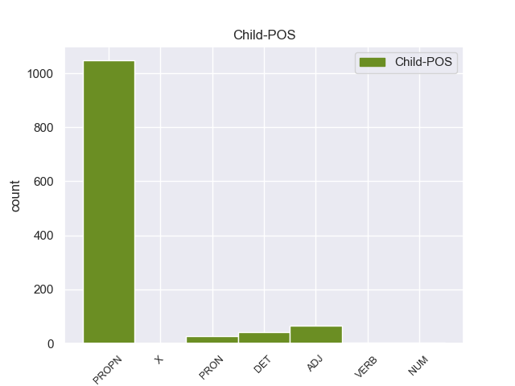

Distribution of features within this leaf



Agreement Rules sorted by frequency.
- When the dependent token is the nominal modifier(nmod) of the head token, and the dependent token is PROPN.
1 El _ _ _ _ 0 _ _ _
2 Football football PROPN _ Gender=Masc|Number=Sing 8 nmod _ _
3 - _ _ _ _ 0 _ _ _
4 Club _ _ _ _ 0 _ _ _
5 Auch _ _ _ _ 0 _ _ _
6 es _ _ _ _ 0 _ _ _
7 un _ _ _ _ 0 _ _ _
8 equipo equipo NOUN _ Gender=Masc|Number=Sing 0 _ _ _
9 profesional _ _ _ _ 0 _ _ _
10 de _ _ _ _ 0 _ _ _
11 rugby _ _ _ _ 0 _ _ _
12 de _ _ _ _ 0 _ _ _
13 Francia _ _ _ _ 0 _ _ _
14 de _ _ _ _ 0 _ _ _
15 la _ _ _ _ 0 _ _ _
16 ciudad _ _ _ _ 0 _ _ _
17 de _ _ _ _ 0 _ _ _
18 Auch _ _ _ _ 0 _ _ _
19 ( _ _ _ _ 0 _ _ _
20 departamento _ _ _ _ 0 _ _ _
21 de _ _ _ _ 0 _ _ _
22 el _ _ _ _ 0 _ _ _
23 Gers _ _ _ _ 0 _ _ _
24 ) _ _ _ _ 0 _ _ _
25 . _ _ _ _ 0 _ _ _
1 El _ _ _ _ 0 _ _ _
2 ingreso ingreso NOUN _ Gender=Masc|Number=Sing 0 _ _ _
3 per _ _ _ _ 0 _ _ _
4 cápita cápita ADJ _ Gender=Masc|Number=Sing 2 nmod _ _
5 para _ _ _ _ 0 _ _ _
6 la _ _ _ _ 0 _ _ _
7 localidad _ _ _ _ 0 _ _ _
8 era _ _ _ _ 0 _ _ _
9 de _ _ _ _ 0 _ _ _
10 $ _ _ _ _ 0 _ _ _
11 14.159 _ _ _ _ 0 _ _ _
12 . _ _ _ _ 0 _ _ _
1 Desde _ _ _ _ 0 _ _ _
2 su _ _ _ _ 0 _ _ _
3 llegada _ _ _ _ 0 _ _ _
4 a _ _ _ _ 0 _ _ _
5 Hollywood _ _ _ _ 0 _ _ _
6 , _ _ _ _ 0 _ _ _
7 Devon _ _ _ _ 0 _ _ _
8 logró _ _ _ _ 0 _ _ _
9 varios _ _ _ _ 0 _ _ _
10 programas programa NOUN _ Gender=Masc|Number=Plur 0 _ _ _
11 de _ _ _ _ 0 _ _ _
12 televisión _ _ _ _ 0 _ _ _
13 y _ _ _ _ 0 _ _ _
14 películas _ _ _ _ 0 _ _ _
15 , _ _ _ _ 0 _ _ _
16 el _ _ _ _ 0 _ _ _
17 mayor _ _ _ _ 0 _ _ _
18 de _ _ _ _ 0 _ _ _
19 ellos ellos DET _ Definite=Def|Gender=Masc|Number=Plur|PronType=Art 10 nmod _ _
20 , _ _ _ _ 0 _ _ _
21 y _ _ _ _ 0 _ _ _
22 el _ _ _ _ 0 _ _ _
23 que _ _ _ _ 0 _ _ _
24 lo _ _ _ _ 0 _ _ _
25 llevó _ _ _ _ 0 _ _ _
26 a _ _ _ _ 0 _ _ _
27 la _ _ _ _ 0 _ _ _
28 fama _ _ _ _ 0 _ _ _
29 fue _ _ _ _ 0 _ _ _
30 el _ _ _ _ 0 _ _ _
31 de _ _ _ _ 0 _ _ _
32 Ned _ _ _ _ 0 _ _ _
33 Bigby _ _ _ _ 0 _ _ _
34 en _ _ _ _ 0 _ _ _
35 el _ _ _ _ 0 _ _ _
36 " _ _ _ _ 0 _ _ _
37 Manual _ _ _ _ 0 _ _ _
38 de _ _ _ _ 0 _ _ _
39 sobrevivencia _ _ _ _ 0 _ _ _
40 escolar _ _ _ _ 0 _ _ _
41 de _ _ _ _ 0 _ _ _
42 Ned _ _ _ _ 0 _ _ _
43 " _ _ _ _ 0 _ _ _
44 . _ _ _ _ 0 _ _ _
1 La _ _ _ _ 0 _ _ _
2 obra _ _ _ _ 0 _ _ _
3 la _ _ _ _ 0 _ _ _
4 realizaría _ _ _ _ 0 _ _ _
5 la _ _ _ _ 0 _ _ _
6 empresa _ _ _ _ 0 _ _ _
7 Savaría _ _ _ _ 0 _ _ _
8 y _ _ _ _ 0 _ _ _
9 Cía _ _ _ _ 0 _ _ _
10 a _ _ _ _ 0 _ _ _
11 un _ _ _ _ 0 _ _ _
12 valor _ _ _ _ 0 _ _ _
13 de _ _ _ _ 0 _ _ _
14 156000 _ _ _ _ 0 _ _ _
15 pesos _ _ _ _ 0 _ _ _
16 , _ _ _ _ 0 _ _ _
17 debiendo _ _ _ _ 0 _ _ _
18 abonar _ _ _ _ 0 _ _ _
19 se _ _ _ _ 0 _ _ _
20 250000 _ _ _ _ 0 _ _ _
21 pesos _ _ _ _ 0 _ _ _
22 a _ _ _ _ 0 _ _ _
23 el _ _ _ _ 0 _ _ _
24 levantar _ _ _ _ 0 _ _ _
25 se _ _ _ _ 0 _ _ _
26 los _ _ _ _ 0 _ _ _
27 cimientos _ _ _ _ 0 _ _ _
28 , _ _ _ _ 0 _ _ _
29 250000 _ _ _ _ 0 _ _ _
30 a _ _ _ _ 0 _ _ _
31 el _ _ _ _ 0 _ _ _
32 llegar llegar NOUN _ Gender=Masc|Number=Sing 0 _ _ _
33 a _ _ _ _ 0 _ _ _
34 la _ _ _ _ 0 _ _ _
35 altura _ _ _ _ 0 _ _ _
36 de _ _ _ _ 0 _ _ _
37 los _ _ _ _ 0 _ _ _
38 arcos _ _ _ _ 0 _ _ _
39 , _ _ _ _ 0 _ _ _
40 250000 _ _ _ _ 0 _ _ _
41 para _ _ _ _ 0 _ _ _
42 techar _ _ _ _ 0 _ _ _
43 lo lo PRON _ Case=Acc|Gender=Masc|Number=Sing|Person=3|PrepCase=Npr|PronType=Prs 32 nmod _ _
44 . _ _ _ _ 0 _ _ _
1 La _ _ _ _ 0 _ _ _
2 orquesta _ _ _ _ 0 _ _ _
3 está _ _ _ _ 0 _ _ _
4 integrada _ _ _ _ 0 _ _ _
5 por _ _ _ _ 0 _ _ _
6 cuerda _ _ _ _ 0 _ _ _
7 , _ _ _ _ 0 _ _ _
8 dos _ _ _ _ 0 _ _ _
9 flautas _ _ _ _ 0 _ _ _
10 , _ _ _ _ 0 _ _ _
11 dos _ _ _ _ 0 _ _ _
12 oboes _ _ _ _ 0 _ _ _
13 , _ _ _ _ 0 _ _ _
14 dos _ _ _ _ 0 _ _ _
15 clarinetes _ _ _ _ 0 _ _ _
16 , _ _ _ _ 0 _ _ _
17 un _ _ _ _ 0 _ _ _
18 corno corno PROPN _ Gender=Masc|Number=Sing 0 _ _ _
19 di _ _ _ _ 0 _ _ _
20 bassetto bassetto X _ Gender=Masc|Number=Sing 18 nmod _ SpaceAfter=No
21 , _ _ _ _ 0 _ _ _
22 dos _ _ _ _ 0 _ _ _
23 fagotes _ _ _ _ 0 _ _ _
24 , _ _ _ _ 0 _ _ _
25 dos _ _ _ _ 0 _ _ _
26 trompas _ _ _ _ 0 _ _ _
27 , _ _ _ _ 0 _ _ _
28 dos _ _ _ _ 0 _ _ _
29 trompetas _ _ _ _ 0 _ _ _
30 y _ _ _ _ 0 _ _ _
31 timbales _ _ _ _ 0 _ _ _
32 . _ _ _ _ 0 _ _ _
1 El _ _ _ _ 0 _ _ _
2 número _ _ _ _ 0 _ _ _
3 de _ _ _ _ 0 _ _ _
4 fincas _ _ _ _ 0 _ _ _
5 hipotecadas _ _ _ _ 0 _ _ _
6 en _ _ _ _ 0 _ _ _
7 Asturias _ _ _ _ 0 _ _ _
8 bajó _ _ _ _ 0 _ _ _
9 un _ _ _ _ 0 _ _ _
10 1,4 _ _ _ _ 0 _ _ _
11 por _ _ _ _ 0 _ _ _
12 ciento _ _ _ _ 0 _ _ _
13 en _ _ _ _ 0 _ _ _
14 noviembre _ _ _ _ 0 _ _ _
15 respecto _ _ _ _ 0 _ _ _
16 a _ _ _ _ 0 _ _ _
17 el _ _ _ _ 0 _ _ _
18 mismo _ _ _ _ 0 _ _ _
19 mes _ _ _ _ 0 _ _ _
20 de _ _ _ _ 0 _ _ _
21 2008 _ _ _ _ 0 _ _ _
22 , _ _ _ _ 0 _ _ _
23 mientras _ _ _ _ 0 _ _ _
24 que _ _ _ _ 0 _ _ _
25 el _ _ _ _ 0 _ _ _
26 importe importe NOUN _ Gender=Masc|Number=Sing 0 _ _ _
27 medio _ _ _ _ 0 _ _ _
28 de _ _ _ _ 0 _ _ _
29 las _ _ _ _ 0 _ _ _
30 mismas _ _ _ _ 0 _ _ _
31 descendió _ _ _ _ 0 _ _ _
32 en _ _ _ _ 0 _ _ _
33 un _ _ _ _ 0 _ _ _
34 8,2 _ _ _ _ 0 _ _ _
35 por _ _ _ _ 0 _ _ _
36 ciento ciento NUM _ Gender=Masc|Number=Sing 26 nmod _ _
37 . _ _ _ _ 0 _ _ _
1 El _ _ _ _ 0 _ _ _
2 cocinero _ _ _ _ 0 _ _ _
3 encargado _ _ _ _ 0 _ _ _
4 de _ _ _ _ 0 _ _ _
5 clausurar clausurar VERB _ Gender=Fem|Number=Sing 8 nmod _ _
6 la _ _ _ _ 0 _ _ _
7 XI _ _ _ _ 0 _ _ _
8 Mostra mostra NOUN _ Gender=Fem|Number=Sing 0 _ _ _
9 de _ _ _ _ 0 _ _ _
10 Cuina _ _ _ _ 0 _ _ _
11 Marinera _ _ _ _ 0 _ _ _
12 de _ _ _ _ 0 _ _ _
13 La _ _ _ _ 0 _ _ _
14 Vila _ _ _ _ 0 _ _ _
15 Joiosa _ _ _ _ 0 _ _ _
16 , _ _ _ _ 0 _ _ _
17 Fran _ _ _ _ 0 _ _ _
18 Martínez _ _ _ _ 0 _ _ _
19 García _ _ _ _ 0 _ _ _
20 , _ _ _ _ 0 _ _ _
21 es _ _ _ _ 0 _ _ _
22 el _ _ _ _ 0 _ _ _
23 jefe _ _ _ _ 0 _ _ _
24 de _ _ _ _ 0 _ _ _
25 cocina _ _ _ _ 0 _ _ _
26 y _ _ _ _ 0 _ _ _
27 propietario _ _ _ _ 0 _ _ _
28 , _ _ _ _ 0 _ _ _
29 junto _ _ _ _ 0 _ _ _
30 a _ _ _ _ 0 _ _ _
31 su _ _ _ _ 0 _ _ _
32 esposa _ _ _ _ 0 _ _ _
33 Cristina _ _ _ _ 0 _ _ _
34 Díaz _ _ _ _ 0 _ _ _
35 , _ _ _ _ 0 _ _ _
36 de _ _ _ _ 0 _ _ _
37 el _ _ _ _ 0 _ _ _
38 restaurante _ _ _ _ 0 _ _ _
39 " _ _ _ _ 0 _ _ _
40 Maralba _ _ _ _ 0 _ _ _
41 " _ _ _ _ 0 _ _ _
42 , _ _ _ _ 0 _ _ _
43 en _ _ _ _ 0 _ _ _
44 Almansa _ _ _ _ 0 _ _ _
45 ( _ _ _ _ 0 _ _ _
46 Albacete _ _ _ _ 0 _ _ _
47 ) _ _ _ _ 0 _ _ _
48 . _ _ _ _ 0 _ _ _
Disagree Examples:
1 Es _ _ _ _ 0 _ _ _
2 un _ _ _ _ 0 _ _ _
3 chip _ _ _ _ 0 _ _ _
4 sintetizador _ _ _ _ 0 _ _ _
5 / _ _ _ _ 0 _ _ _
6 generador _ _ _ _ 0 _ _ _
7 de _ _ _ _ 0 _ _ _
8 efectos _ _ _ _ 0 _ _ _
9 de _ _ _ _ 0 _ _ _
10 sonido _ _ _ _ 0 _ _ _
11 compatible _ _ _ _ 0 _ _ _
12 con _ _ _ _ 0 _ _ _
13 la _ _ _ _ 0 _ _ _
14 familia familia NOUN _ Gender=Fem|Number=Sing 0 _ _ _
15 de _ _ _ _ 0 _ _ _
16 microprocesadores microprocesador PROPN _ Gender=Masc|Number=Plur 14 nmod _ _
17 65XX _ _ _ _ 0 _ _ _
18 . _ _ _ _ 0 _ _ _
1 Mientras _ _ _ _ 0 _ _ _
2 que _ _ _ _ 0 _ _ _
3 en _ _ _ _ 0 _ _ _
4 otros _ _ _ _ 0 _ _ _
5 países _ _ _ _ 0 _ _ _
6 se _ _ _ _ 0 _ _ _
7 seguía _ _ _ _ 0 _ _ _
8 separando _ _ _ _ 0 _ _ _
9 la _ _ _ _ 0 _ _ _
10 profesión profesión NOUN _ Gender=Fem|Number=Sing 0 _ _ _
11 de _ _ _ _ 0 _ _ _
12 uno uno PRON _ Gender=Masc|Number=Sing|PronType=Ind 10 nmod _ _
13 y _ _ _ _ 0 _ _ _
14 otro _ _ _ _ 0 _ _ _
15 , _ _ _ _ 0 _ _ _
16 ejemplo _ _ _ _ 0 _ _ _
17 de _ _ _ _ 0 _ _ _
18 Italia _ _ _ _ 0 _ _ _
19 con _ _ _ _ 0 _ _ _
20 el _ _ _ _ 0 _ _ _
21 Ingegnere _ _ _ _ 0 _ _ _
22 Civile _ _ _ _ 0 _ _ _
23 - _ _ _ _ 0 _ _ _
24 Edile _ _ _ _ 0 _ _ _
25 ( _ _ _ _ 0 _ _ _
26 Ingeniero _ _ _ _ 0 _ _ _
27 Civil _ _ _ _ 0 _ _ _
28 o _ _ _ _ 0 _ _ _
29 de _ _ _ _ 0 _ _ _
30 la _ _ _ _ 0 _ _ _
31 Construcción _ _ _ _ 0 _ _ _
32 en _ _ _ _ 0 _ _ _
33 otros _ _ _ _ 0 _ _ _
34 países _ _ _ _ 0 _ _ _
35 ) _ _ _ _ 0 _ _ _
36 y _ _ _ _ 0 _ _ _
37 el _ _ _ _ 0 _ _ _
38 Architetto _ _ _ _ 0 _ _ _
39 , _ _ _ _ 0 _ _ _
40 en _ _ _ _ 0 _ _ _
41 España _ _ _ _ 0 _ _ _
42 , _ _ _ _ 0 _ _ _
43 la _ _ _ _ 0 _ _ _
44 implantación _ _ _ _ 0 _ _ _
45 de _ _ _ _ 0 _ _ _
46 el _ _ _ _ 0 _ _ _
47 título _ _ _ _ 0 _ _ _
48 de _ _ _ _ 0 _ _ _
49 Aparejador _ _ _ _ 0 _ _ _
50 supone _ _ _ _ 0 _ _ _
51 que _ _ _ _ 0 _ _ _
52 el _ _ _ _ 0 _ _ _
53 Arquitecto _ _ _ _ 0 _ _ _
54 pase _ _ _ _ 0 _ _ _
55 a _ _ _ _ 0 _ _ _
56 tener _ _ _ _ 0 _ _ _
57 atribuciones _ _ _ _ 0 _ _ _
58 en _ _ _ _ 0 _ _ _
59 el _ _ _ _ 0 _ _ _
60 proyecto _ _ _ _ 0 _ _ _
61 arquitectónico _ _ _ _ 0 _ _ _
62 , _ _ _ _ 0 _ _ _
63 lo _ _ _ _ 0 _ _ _
64 que _ _ _ _ 0 _ _ _
65 se _ _ _ _ 0 _ _ _
66 llama _ _ _ _ 0 _ _ _
67 el _ _ _ _ 0 _ _ _
68 proyecto _ _ _ _ 0 _ _ _
69 básico _ _ _ _ 0 _ _ _
70 propio _ _ _ _ 0 _ _ _
71 de _ _ _ _ 0 _ _ _
72 la _ _ _ _ 0 _ _ _
73 profesión _ _ _ _ 0 _ _ _
74 de _ _ _ _ 0 _ _ _
75 Arquitecto _ _ _ _ 0 _ _ _
76 , _ _ _ _ 0 _ _ _
77 y _ _ _ _ 0 _ _ _
78 además _ _ _ _ 0 _ _ _
79 pase _ _ _ _ 0 _ _ _
80 a _ _ _ _ 0 _ _ _
81 tener _ _ _ _ 0 _ _ _
82 las _ _ _ _ 0 _ _ _
83 atribuciones _ _ _ _ 0 _ _ _
84 en _ _ _ _ 0 _ _ _
85 el _ _ _ _ 0 _ _ _
86 proyecto _ _ _ _ 0 _ _ _
87 de _ _ _ _ 0 _ _ _
88 ejecución _ _ _ _ 0 _ _ _
89 , _ _ _ _ 0 _ _ _
90 asimilables _ _ _ _ 0 _ _ _
91 a _ _ _ _ 0 _ _ _
92 la _ _ _ _ 0 _ _ _
93 profesión _ _ _ _ 0 _ _ _
94 de _ _ _ _ 0 _ _ _
95 Ingeniero _ _ _ _ 0 _ _ _
96 de _ _ _ _ 0 _ _ _
97 la _ _ _ _ 0 _ _ _
98 Edificación _ _ _ _ 0 _ _ _
99 o _ _ _ _ 0 _ _ _
100 Maestro _ _ _ _ 0 _ _ _
101 de _ _ _ _ 0 _ _ _
102 Obras _ _ _ _ 0 _ _ _
103 . _ _ _ _ 0 _ _ _
1 Él _ _ _ _ 0 _ _ _
2 también _ _ _ _ 0 _ _ _
3 refiere _ _ _ _ 0 _ _ _
4 a _ _ _ _ 0 _ _ _
5 « _ _ _ _ 0 _ _ _
6 Aidenn _ _ _ _ 0 _ _ _
7 » _ _ _ _ 0 _ _ _
8 , _ _ _ _ 0 _ _ _
9 otra _ _ _ _ 0 _ _ _
10 palabra palabra NOUN _ Gender=Fem|Number=Sing 0 _ _ _
11 de _ _ _ _ 0 _ _ _
12 el _ _ _ _ 0 _ _ _
13 Jardín jardín PROPN _ Gender=Masc|Number=Sing 10 nmod _ _
14 de _ _ _ _ 0 _ _ _
15 el _ _ _ _ 0 _ _ _
16 Edén _ _ _ _ 0 _ _ _
17 , _ _ _ _ 0 _ _ _
18 aunque _ _ _ _ 0 _ _ _
19 Poe _ _ _ _ 0 _ _ _
20 la _ _ _ _ 0 _ _ _
21 usa _ _ _ _ 0 _ _ _
22 para _ _ _ _ 0 _ _ _
23 preguntar _ _ _ _ 0 _ _ _
24 si _ _ _ _ 0 _ _ _
25 Leonor _ _ _ _ 0 _ _ _
26 ha _ _ _ _ 0 _ _ _
27 sido _ _ _ _ 0 _ _ _
28 aceptada _ _ _ _ 0 _ _ _
29 en _ _ _ _ 0 _ _ _
30 el _ _ _ _ 0 _ _ _
31 paraíso _ _ _ _ 0 _ _ _
32 . _ _ _ _ 0 _ _ _
1 Desde _ _ _ _ 0 _ _ _
2 la _ _ _ _ 0 _ _ _
3 cultura _ _ _ _ 0 _ _ _
4 forzada _ _ _ _ 0 _ _ _
5 de _ _ _ _ 0 _ _ _
6 Ba _ _ _ _ 0 _ _ _
7 Sing _ _ _ _ 0 _ _ _
8 Se _ _ _ _ 0 _ _ _
9 a _ _ _ _ 0 _ _ _
10 los _ _ _ _ 0 _ _ _
11 aislacionistas _ _ _ _ 0 _ _ _
12 habitantes _ _ _ _ 0 _ _ _
13 de _ _ _ _ 0 _ _ _
14 la _ _ _ _ 0 _ _ _
15 Isla _ _ _ _ 0 _ _ _
16 Kyoshi _ _ _ _ 0 _ _ _
17 , _ _ _ _ 0 _ _ _
18 la _ _ _ _ 0 _ _ _
19 cultura cultura NOUN _ Gender=Fem|Number=Sing 0 _ _ _
20 de _ _ _ _ 0 _ _ _
21 el _ _ _ _ 0 _ _ _
22 Reino reino PROPN _ Gender=Masc|Number=Sing 19 nmod _ _
23 Tierra _ _ _ _ 0 _ _ _
24 es _ _ _ _ 0 _ _ _
25 mucho _ _ _ _ 0 _ _ _
26 menos _ _ _ _ 0 _ _ _
27 definidos _ _ _ _ 0 _ _ _
28 que _ _ _ _ 0 _ _ _
29 los _ _ _ _ 0 _ _ _
30 de _ _ _ _ 0 _ _ _
31 las _ _ _ _ 0 _ _ _
32 otras _ _ _ _ 0 _ _ _
33 naciones _ _ _ _ 0 _ _ _
34 . _ _ _ _ 0 _ _ _
1 MADRID _ _ _ _ 0 _ _ _
2 , _ _ _ _ 0 _ _ _
3 3 _ _ _ _ 0 _ _ _
4 ( _ _ _ _ 0 _ _ _
5 EUROPA _ _ _ _ 0 _ _ _
6 PRESS _ _ _ _ 0 _ _ _
7 ) _ _ _ _ 0 _ _ _
8 Las _ _ _ _ 0 _ _ _
9 tenistas _ _ _ _ 0 _ _ _
10 españolas _ _ _ _ 0 _ _ _
11 Anabel _ _ _ _ 0 _ _ _
12 Medina _ _ _ _ 0 _ _ _
13 , _ _ _ _ 0 _ _ _
14 Carla _ _ _ _ 0 _ _ _
15 Suárez _ _ _ _ 0 _ _ _
16 , _ _ _ _ 0 _ _ _
17 María _ _ _ _ 0 _ _ _
18 José _ _ _ _ 0 _ _ _
19 Martínez _ _ _ _ 0 _ _ _
20 , _ _ _ _ 0 _ _ _
21 Nuria _ _ _ _ 0 _ _ _
22 Llagostera _ _ _ _ 0 _ _ _
23 , _ _ _ _ 0 _ _ _
24 Arantxa _ _ _ _ 0 _ _ _
25 Parra _ _ _ _ 0 _ _ _
26 y _ _ _ _ 0 _ _ _
27 Lourdes _ _ _ _ 0 _ _ _
28 Domínguez _ _ _ _ 0 _ _ _
29 han _ _ _ _ 0 _ _ _
30 decidido _ _ _ _ 0 _ _ _
31 retirar _ _ _ _ 0 _ _ _
32 su _ _ _ _ 0 _ _ _
33 plante _ _ _ _ 0 _ _ _
34 para _ _ _ _ 0 _ _ _
35 disputar _ _ _ _ 0 _ _ _
36 la _ _ _ _ 0 _ _ _
37 próxima _ _ _ _ 0 _ _ _
38 eliminatoria _ _ _ _ 0 _ _ _
39 de _ _ _ _ 0 _ _ _
40 la _ _ _ _ 0 _ _ _
41 Copa _ _ _ _ 0 _ _ _
42 Federación _ _ _ _ 0 _ _ _
43 tras _ _ _ _ 0 _ _ _
44 llegar _ _ _ _ 0 _ _ _
45 a _ _ _ _ 0 _ _ _
46 un _ _ _ _ 0 _ _ _
47 acuerdo acuerdo NOUN _ Gender=Masc|Number=Sing 0 _ _ _
48 con _ _ _ _ 0 _ _ _
49 la _ _ _ _ 0 _ _ _
50 Real real PROPN _ Gender=Fem|Number=Sing 47 nmod _ _
51 Federación _ _ _ _ 0 _ _ _
52 Española _ _ _ _ 0 _ _ _
53 de _ _ _ _ 0 _ _ _
54 Tenis _ _ _ _ 0 _ _ _
55 ( _ _ _ _ 0 _ _ _
56 RFET _ _ _ _ 0 _ _ _
57 ) _ _ _ _ 0 _ _ _
58 después _ _ _ _ 0 _ _ _
59 de _ _ _ _ 0 _ _ _
60 más _ _ _ _ 0 _ _ _
61 de _ _ _ _ 0 _ _ _
62 cuatro _ _ _ _ 0 _ _ _
63 horas _ _ _ _ 0 _ _ _
64 de _ _ _ _ 0 _ _ _
65 reunión _ _ _ _ 0 _ _ _
66 en _ _ _ _ 0 _ _ _
67 el _ _ _ _ 0 _ _ _
68 Consejo _ _ _ _ 0 _ _ _
69 Superior _ _ _ _ 0 _ _ _
70 de _ _ _ _ 0 _ _ _
71 Deportes _ _ _ _ 0 _ _ _
72 ( _ _ _ _ 0 _ _ _
73 CSD _ _ _ _ 0 _ _ _
74 ) _ _ _ _ 0 _ _ _
75 con _ _ _ _ 0 _ _ _
76 la _ _ _ _ 0 _ _ _
77 mediación _ _ _ _ 0 _ _ _
78 de _ _ _ _ 0 _ _ _
79 el _ _ _ _ 0 _ _ _
80 secretario _ _ _ _ 0 _ _ _
81 de _ _ _ _ 0 _ _ _
82 Estado _ _ _ _ 0 _ _ _
83 para _ _ _ _ 0 _ _ _
84 el _ _ _ _ 0 _ _ _
85 Deporte _ _ _ _ 0 _ _ _
86 , _ _ _ _ 0 _ _ _
87 Jaime _ _ _ _ 0 _ _ _
88 Lissavetzky _ _ _ _ 0 _ _ _
89 . _ _ _ _ 0 _ _ _